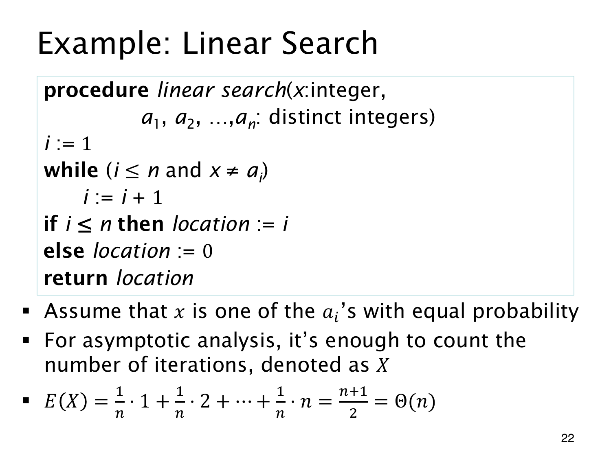

L1.11 · 第 22 页讲解原文
查看这一页课件

线性查找到底数哪一种操作
线性查找从 a1 起逐项找 x，找到返回下标，不存在则返回 0。题目假设数组元素互异，目标一定存在，并且落在各位置的概率都是 1/n。
若目标在第 k 位，要检查前 k 个元素。用 X 记录元素检查次数，则
p(X=k)=n1(k=1,…,n),E(X)=n1k=1∑nk=2n+1=Θ(n).
平均约检查一半元素，增长阶仍为线性，没有变成 Θ(logn)。最坏时目标在末尾，检查 n 个。
课件称它为 iterations，需要说明口径。若严格数 while 循环体中的 i := i+1，目标在第 k 位时只执行 k−1 次，均值是 (n−1)/2；(n+1)/2 数的是包含成功那次在内的元素检查。两者只差常数，不影响渐近阶，但精确值不同，原勘误保留。
若目标可能不在数组，或各位置不等可能，就要重新加权计算，不能沿用这组平均值。
查看本页勘误
精确计数口径说明
原课件称 X 为 iterations，公式 E(X)=(n+1)/2 对应检查的数组元素数/相等比较次数。若仅计 while 循环体的 i:=i+1 执行次数，成功查找第 k 位时为 k−1，期望为 (n−1)/2。两者均为 Θ(n)。原图保留，讲解已明确区分。